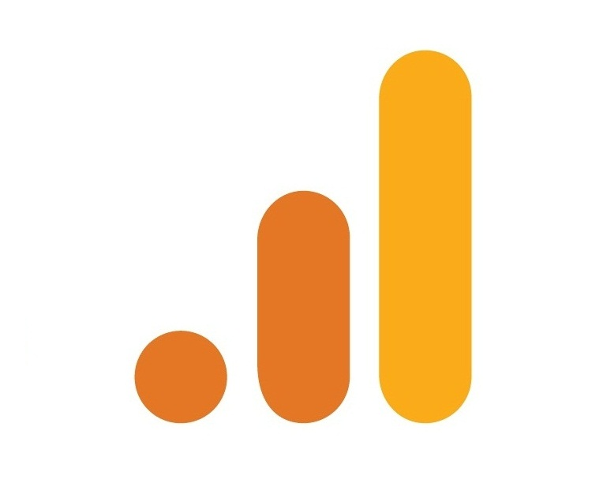

Sobre Mim
Graduada em Administração de Empresas e apaixonada por dados. Atualmente na Pós Graduação em Business Analytics & Big Data, dedico meu tempo a Ciência de Dados e com intuito de mostrar meu trabalho criei um lugar para orgarnizar meus projetos.
Conhecimentos
SQL
- BD Relacionais e NoSQL;
- DQL – DDL – DML – DCL – DTL;
- Modelagem Conceitual, Lógica e Física;
- Funções agregadas;
- Estatísticas de resumo;
- Relacionamento e Cardinalidade;
- ETL;
Python
- Variáveis, Tipos e Estruturas de Dados;
- Loops, Condicionais, Métodos e Funções;
- Análises Exploratórias;
- Pandas, NumPy, Matplotlib, Seaborn;
Power BI
- Modelagem;
- DAX;
- Séries Temporais;
- Análises Preditivas;
Projetos
